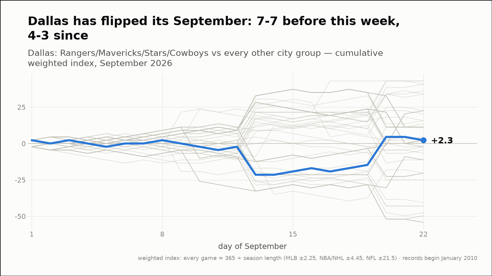
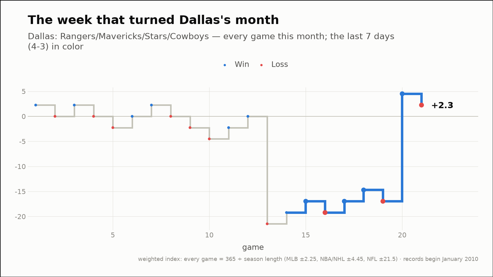
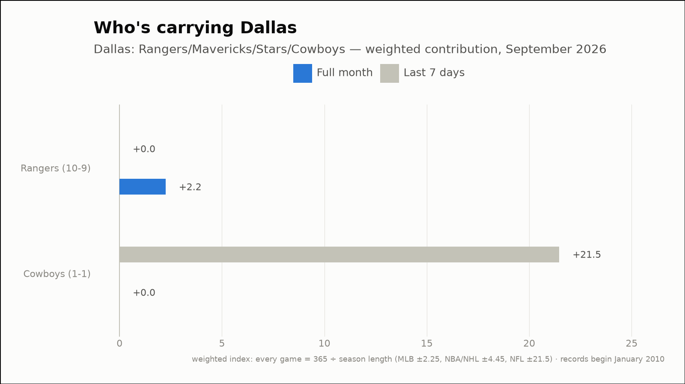
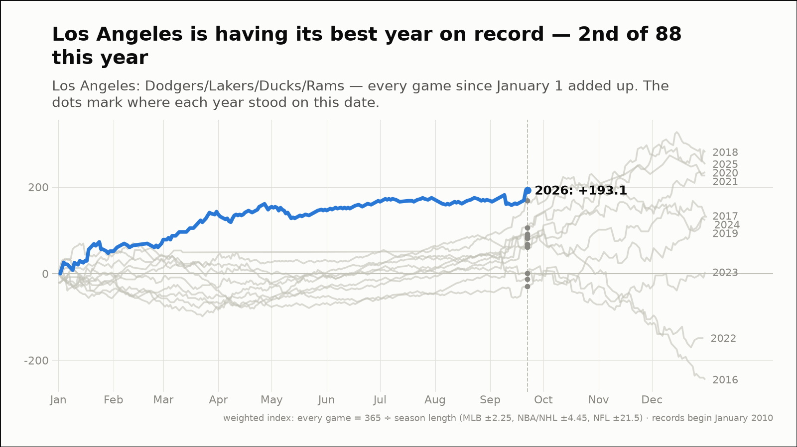
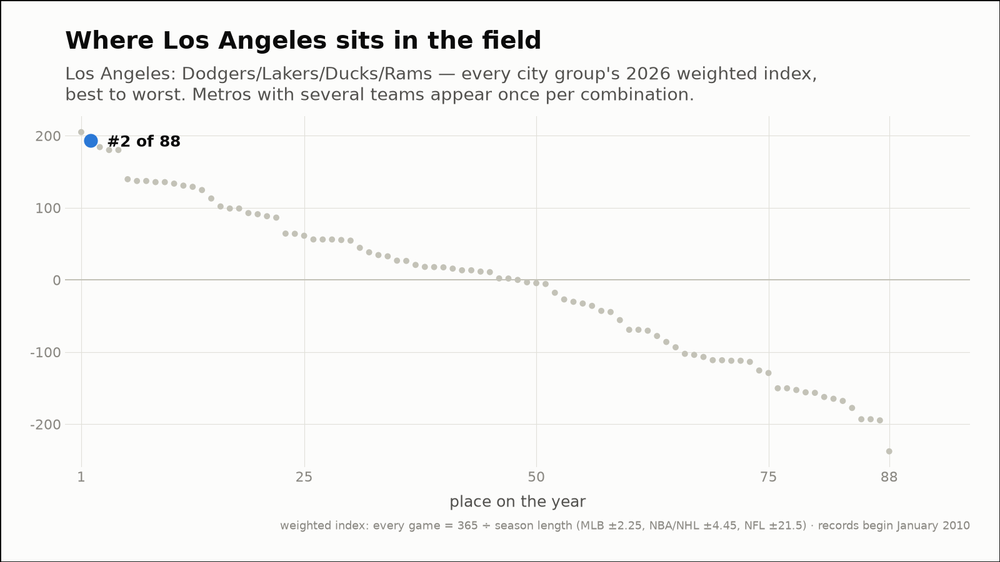
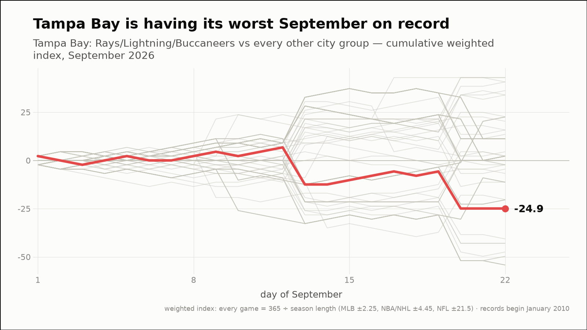
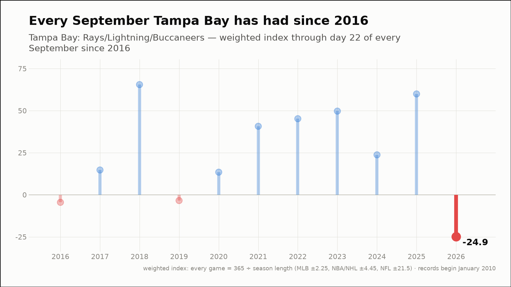
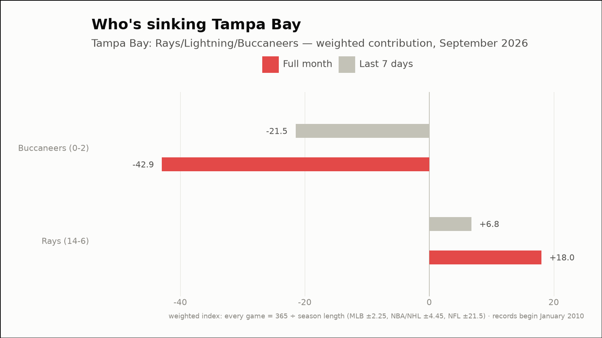

Out of the norm — three fandoms off their own script
The weekly hunt across all 88 city groups, through September 22, 2026
Dallas has flipped its September: 7-7 before this week, 4-3 since
Dallas: Rangers/Mavericks/Stars/Cowboys
- Before this week
- 7-7, -19.2 weighted (-1.37 per game)
- Since
- 4-3, +21.5 weighted (+3.07 per game)
- This month (through September 22)
- 11-10, +2.2 weighted
- Last 7 days
- 4-3, +21.5 weighted
- Driving it this week
- Cowboys (1-0, +21.5)



Los Angeles is having its best year on record — 2nd of 88 this year
Los Angeles: Dodgers/Lakers/Ducks/Rams
- 2026 so far (through September 22)
- 166-112, +193.1 weighted — 1st-best of the 11 years on record, at the same point
- Against the field
- 2nd of 88 city groups on the year (99th percentile)
- This month (through September 22)
- 16-6, +22.5 weighted
- Last 7 days
- 6-1, +30.5 weighted
- Driving it this week
- Rams (1-0, +21.5)
- Active streaks
- Dodgers W5


Tampa Bay is having its worst September on record
Tampa Bay: Rays/Lightning/Buccaneers
- This month (through September 22)
- 14-8, -24.9 weighted — 1st-worst September of the 11 on record
- vs all months
- 10th-worst of 116 months on record (8th percentile)
- Last 7 days
- 5-3, -14.7 weighted
- Driving it this week
- Buccaneers (0-1, -21.5)


